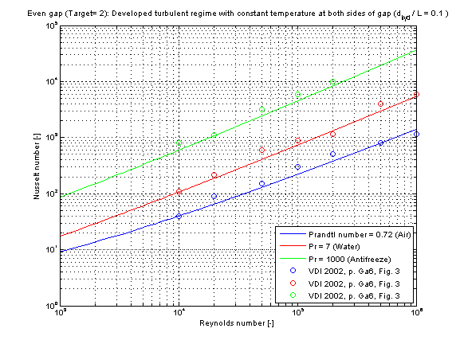

Modelica.Fluid.Dissipation.Utilities.SharedDocumentation.HeatTransfer.Channel
Modelica.Fluid.Dissipation.Utilities.SharedDocumentation.HeatTransfer.Channel
Modelica.Fluid.Dissipation.Utilities.SharedDocumentation.HeatTransfer.Channel
Modelica.Fluid.Dissipation.Utilities.SharedDocumentation.HeatTransfer.Channel| Name | Description |
|---|---|
Modelica.Fluid.Dissipation.Utilities.SharedDocumentation.HeatTransfer.Channel.kc_evenGapLaminarCalculation of the mean convective heat transfer coefficient kc for a laminar fluid flow through an even gap at different fluid flow and heat transfer situations.
There are basically three differences:

The mean convective heat transfer coefficient kc for an even gap is calculated through the corresponding Nusselt number Nu_lam according to [VDI 2002, p. Gb 7, eq. 43] :
Nu_lam = [(Nu_1)^3 + (Nu_2)^3 + (Nu_3)^3]^(1/3)
with the corresponding mean convective heat transfer coefficient kc :
kc = Nu_lam * lambda / d_hyd
with
| cp | as specific heat capacity at constant pressure [J/(kg.K)], |
| d_hyd = 2*s | as hydraulic diameter of gap [m], |
| eta | as dynamic viscosity of fluid [Pa.s], |
| h | as height of cross sectional area in gap [m], |
| kc | as mean convective heat transfer coefficient [W/(m2.K)], |
| lambda | as heat conductivity of fluid [W/(m.K)], |
| L | as overflowed length of gap (normal to cross sectional area) [m] , |
| Nu_lam | as mean Nusselt number [-], |
| Pr = eta*cp/lambda | as Prandtl number [-], |
| rho | as fluid density [kg/m3], |
| s | as distance between parallel plates of cross sectional area [m], |
| Re = rho*v*d_hyd/eta | as Reynolds number [-], |
| v | as mean velocity in gap [m/s]. |
The summands for the mean Nusselt number Nu_lam at a chosen fluid flow and heat transfer situation are calculated as follows:
Note that the fluid properties shall be calculated with an arithmetic mean temperature out of the fluid flow temperatures at the entrance and the exit of the gap.
The mean Nusselt number Nu_lam representing the mean convective heat transfer coefficient kc in dependence of the chosen fluid flow and heat transfer situations (targets) is shown in the figure below.

Modelica.Fluid.Dissipation.Utilities.SharedDocumentation.HeatTransfer.Channel.kc_evenGapOverallCalculation of the mean convective heat transfer coefficient kc for an laminar or turbulent fluid flow through an even gap at different fluid flow and heat transfer situations.
There are basically three differences:
This heat transfer function enables a calculation of heat transfer coefficient for laminar and turbulent flow regime. The geometry, constant and fluid parameters of the function are the same as for kc_evenGapLaminar and kc_evenGapTurbulent.
The calculation conditions for laminar and turbulent flow is equal to the calculation in kc_evenGapLaminar and kc_evenGapTurbulent. A smooth transition between both functions is carried out between 2200 ≤ Re ≤ 30000 (see figure below).
The mean Nusselt number Nu representing the mean convective heat transfer coefficient kc for Prandtl numbers of different fluids in dependence of the chosen fluid flow and heat transfer situations (targets) is shown in the figures below.
The verification for all targets is shown in the following figure w.r.t. the reference:

Modelica.Fluid.Dissipation.Utilities.SharedDocumentation.HeatTransfer.Channel.kc_evenGapTurbulentCalculation of the mean convective heat transfer coefficient kc for a developed turbulent fluid flow through an even gap at heat transfer from both sides.
There are basically three differences:
The mean convective heat transfer coefficient kc for an even gap is calculated through the corresponding Nusselt number Nu_turb according to Gnielinski in [VDI 2002, p. Gb 7, sec. 2.4]
Nu_turb =(zeta/8)*Re*Pr/{1+12.7*[zeta/8]^(0.5)*[Pr^(2/3) -1]}*{1+[d_hyd/L]^(2/3)}
where the pressure loss coefficient zeta according to Konakov in [VDI 2002, p. Ga 5, eq. 27] is determined by
zeta = 1/[1.8*log10(Re) - 1.5]^2
resulting to the corresponding mean convective heat transfer coefficient kc
kc = Nu_turb * lambda / d_hyd
with
| cp | as specific heat capacity at constant pressure [J/(kg.K)], |
| d_hyd = 2*s | as hydraulic diameter of gap [m], |
| eta | as dynamic viscosity of fluid [Pa.s], |
| h | as height of cross sectional area in gap [m], |
| kc | as mean convective heat transfer coefficient [W/(m2.K)], |
| lambda | as heat conductivity of fluid [W/(m.K)], |
| L | as overflowed length of gap (normal to cross sectional area) [m] , |
| Nu_turb | as mean Nusselt number for turbulent regime [-], |
| Pr = eta*cp/lambda | as Prandtl number [-], |
| rho | as fluid density [kg/m3], |
| s | as distance between parallel plates of cross sectional area [m], |
| Re = rho*v*d_hyd/eta | as Reynolds number [-], |
| v | as mean velocity in gap [m/s], |
| zeta | as pressure loss coefficient [-]. |
Note that the fluid flow properties shall be calculated with an arithmetic mean temperature out of the fluid flow temperatures at the entrance and the exit of the gap.
The mean Nusselt number Nu_turb representing the mean convective heat transfer coefficient kc in dependence of the chosen fluid flow and heat transfer situations (targets) is shown in the figure below.
